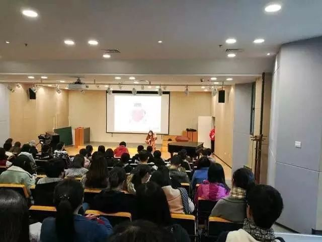

谈性说艾 | 么西杭州行谈了说了什么？

上周末，酷儿论坛邀请到新金赛的联合创始人兼CEO吴么西为杭州高校的同学们进行了一次关于“性”的讲座。在讲座上，么西的一言一谈都极大地引起了同学们的兴趣，让在场的同学们都感到受益匪浅。下面是两位同学的收获，让我们一起来看看讲座上么西都讲了些什么，又让同学们学到了什么吧。

在没有遇见么西老师之前，她的新金赛创始人CEO、网络主播、非诚勿扰嘉宾的身份都让我觉得那样的遥远与高高在上。但当真的和么西接触下来却是那样亲切和自然，第一次见面就让我这个平时不甚外向的人放下心里防备。虽然和么西老师相处时间不多，但短短的交流便令我如沐春风，获益良多了。

讲座在相对轻松的环境下进行，也许是刚来的拘束，当么西老师问到大家想到“性”会联想到什么的时候，大家并不那么主动。后来陆续发出了“性感”、“爱”、“性取向”、“性骚扰”、“性别”等等答案，看来“性”字能发散出很多东西呀。随后老师分享了自己在分享中的趣事，以及我们不能不知道的性知识，大家看看你们给自己打多少分。
1.关于避孕，由于前列腺液含有一定量的精子，而且男人在高潮时不易控制自己，所以体外射精的方式并不可取（一定要戴套）。而且安全套很大作用也是防止病毒感染。
2.关于那些V，AV、GV里的场景是艺术片，和实际生活是存在差异的，人类的尺寸该怎么样就怎么样，不是谁谁谁都有18+。
3.关于早泄，很多人都没有概念，有人觉得十分钟也是早泄（加上前戏，你们够用啦），那些炫耀1-2小时的，赶紧检查自己是否患有“不射精症”（认真脸）。
4.关于自慰，自慰虽然无害，但也要把握一个量，太多就想一天吃很多饭一样，光顾着吃而不去干别的事情，而影响生活。自慰要找个安全舒服的环境，不要爸妈突然进来了，会产生阴影，更不要想着快速解决，身体会产生记忆。
5.关于伴侣的性感受，需要去关注。很多人会抱怨伴侣"性冷淡"，其实往往是他们自己在性爱中将伴侣视为工具，而忽略了共情。
6.关于性骚扰，么西老师会收到一些性器官的图片，老师虽然是做性教育的，但是她的任务是传播正确的知识，想要了解自己身体状况的人可以需求身边人的帮助，你们这样做事赤裸裸的“性骚扰”。
7.洗洗是不是更健康,老师说女性阴道有自我保护的功能，而且碱性的试剂可能会破坏酸性的体内环境，所以不是很必要就不要做哦。
8、所谓的黑木耳，包括乳头上的黑色，只是身体的色素沉淀，与自己的经验丰富与否完全没关系，这一点男生女生都要记住，不要想着进行阴唇漂红，完全是伤害身体的行为，女性在爱别人的时候更要爱自己。
9.如果怀疑自己得了性病，需要的是去公立医院找医生，百度不可靠的教训我们已经吃够了。
10.关于包皮，老师请了一位戴连衣帽的同学，让其扮演一根勃起的阴茎，而他的帽子则是包皮，如果在那种状态下，包皮扯不下来就一定要割了，否则会使得细菌滋生。
最后的提问环节，同学们对自己在有关性以及情感上的话题和老师进行交流。更有一个男生非常诚恳地表达了自己对老师致力于性教育的感动与感谢，顺便请教了老师对待尤其来自于网络的那些流言蜚语。老师自如的态度令我印象深刻，她做得是一件正确的事情，只不过污秽的人的自我意淫而已（不是原话）。

本来以为，自己作为一名生物专业的学生，也曾徜徉在网络“性知识”的海洋中，还曾和好友大谈“性爱”，这样的性教育讲座应该只是“锦上添花”的工作。可是，当我真的听完整场讲座，发现我要学习的还有很多。不光是对知识的学习，更是对“性”的态度的学习。我想，我和多数中国青年的成长一样，我们成长中伴随的“性”是私密的、偷偷摸摸的甚至从未提及的。这种从未提及,是从来没有一个具有权威知识的人在公开或私人的场合中认真严肃地探讨“性”究竟是怎么回事。
我的“性启蒙”（手淫）是在初一室友床上发生的，当时的我还不知道这样的“启蒙”给我未来初中三年的生活都覆上一层厚厚的摆脱不了的阴影。我甚至忘了在我初中毕业四年以后的某一天，我是花了多大的勇气才在公众场合谈及那段现在看来无足挂齿的经历。回想起来，当时的诸多困扰只不过是“性教育不足”的产物罢了。其实反观现在的自己，“性教育”仍然是不甚全面的，作为男生，我也从未注意需要像刷牙洗脸一样，每日清理自己的私密部位（也不方便），对于包皮的割与不割也有着些许苦恼，对于手淫的态度，对于身体部位的尺寸更是有着强烈的困惑。听完么西的讲座，与其说我学到了多少知识，毋宁说我懂得了更加关爱与尊重这个与我息息相关却被忽略的“性我”。

么西的宝贵之处在于，她不是希望通过用“性”这种让人“刺眼”的字眼来夺人眼球，她是努力地让世人看到“性”却不觉得刺眼，让人懂性、谈性却不觉羞涩，让人们认识到“性”只是作为与吃喝拉撒一样普通的生活的一部分而已。小朋友可以谈性别，谈性器官，而没有什么性欲，有的只是大人的自以为是的遮掩。套用么西的话说，淫着自淫，才把本来没有表达的东西视为淫秽。
在98心灵贴上又看到婚前性行为应不应该的帖子，我个人的态度是尊重每个人对自己性支配的权利，但是更多的时候，我们的选择权其实是被社会绑架了的，性教育的意义还在于开放整个社会对于性的接纳程度，一个人不应该因为经历过性而贬值，更不会因为是一朵“白莲花”而显得多么有价值。
前段时间，我的母亲大人和我通电话，告诫我不要在朋友圈发什么“不好的东西”，我很理解她的担忧，也正是这样的担忧，让我看到强调性教育的重要性。